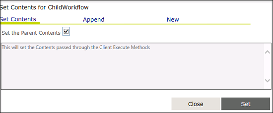
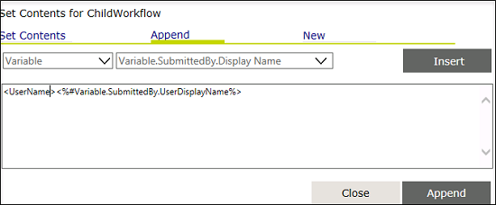
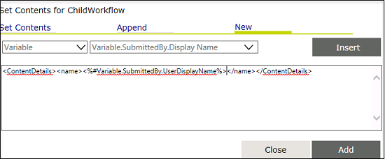
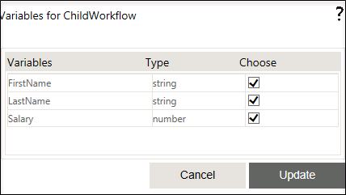
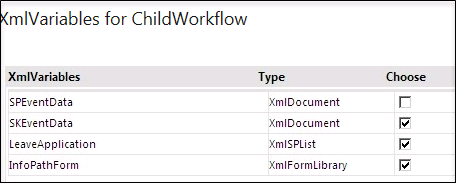
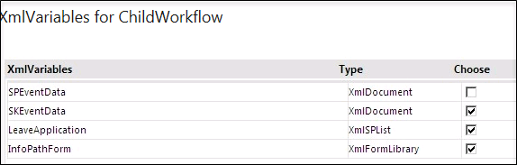
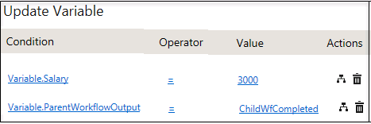

No
How to Pass Variables/Contents from Parent Workflow to Child Workflow?
The Workflow Activity enables the execution of a second (child) workflow from a (parent) workflow. The workflow activity can be used to call a child workflow from a parent workflow. The Variables for the child workflow property and XMLVariables for the child workflow property enable parent workflow to pass variable and XML variable information to the child workflow respectively.
To pass variables or contents from parent workflow to child workflow, follow the steps given below:
- In the parent workflow, right-click Workflow Activity, and then select Activity Properties.
- Enter the repository name for Repository property. The child workflow should belong to the same repository of the parent workflow. The repository property of a child workflow is exposed for backward compatibility.
- Enter the name of the workflow to be executed in the Workflow property.
- Enter the version only if any specific version of the (child) workflow to be executed in the Version property. Leave this as blank, if the latest published version of (child) workflow has to be executed.
- Build the content to be passed to the child workflow, if required in the Contents for ChildWorkflow property.
Use one of the following options to specify the content to be passed: - Set the contents to be passed as same as Parent Contents
- Append some more contents to the parent workflow contents
- New workflow contents
Steps to set the Contents for ChildWorkflow property:
- To specify the contents to be passed to the child workflow, click the button for the 'Contents for ChildWorkflow' property to open the property window.
- In the Set Contents window, the Set Contents tab is selected by default and the corresponding window is displayed.
- Click the Set the Parent Contents check box to pass the parent contents XML to the child workflow.

- Click Set to set this property.
- Alternatively, you can append XML content to the parent workflow contents and pass them to the child workflow. To do this, click Append to open the corresponding window.
- Select a type of value (Variable or Content) and the corresponding value collection from the respective drop-down and click Insert to add the selection to the text area

- Add more XML contents if necessary. After adding all the values, click Append to save the setting.
- Third options to build complete XML content and can pass these contents to child workflow. To do this, click New to open the corresponding window.
- In this window, select a type of value (Variable or Content) and the corresponding value collection from the respective drop-down and click the Insert button to add the selection to the text area.

- After specifying the new content, click Add button to save the settings.
Select the variables that need to be passed to the child workflow from Variables for ChildWorkflow property.
Steps to set the Variables for ChildWorkflow property:
- To specify the variables to be passed to the child workflow, click the button for the 'Variables for ChildWorkflow' property to open the property window.
- In the Variables for ChildWorkflow window, select the required variables to be passed to the child workflow.

- After specifying the data, click Update.
Note: These variables are expected to exist in the child workflow. Make sure to define variables with same name and type as defined in parent workflow.
Select the XML variables that need to be passed to the child workflow from XMLVariables for ChildWorkflow property.
Steps to set the XMLVariables for ChildWorkflow property:
- To specify the XML variables to be passed to the child workflow, click the button for the 'XMLVariables for ChildWorkflow' property to open the property window.
- In the XMLVariables for ChildWorkflow window, choose the required variables to be passed to the child workflow.

- Click the Update button.
Note: These XML variables are expected to exist in the child workflow. Make sure to define XML variables with same name and type as defined in parent workflow.
To work with any XML variables or resource activities, SKEventData XML variables must be passed in the child workflow, where SKEventData contains some events information related to parent workflow which needs to be passed to child workflow. If SKEventData variable is not created, user can create XML variable of type XMLDocument with the same name 'SKEventData' by locating the 'SKEventData.xml' from the following path: [AVEVA Work Tasks Installed Folder]\AVEVA\Work Tasks\Web\BPMUITemplates\Default\XMLSchemas
To create SPEventData XML Variable, use one of the following options:
- Create XML variable of type XMLDocument with the same name 'SPEventData' by locating the 'SPEventData.xml' from the following path - [AVEVA Work Tasks Installed Folder]\AVEVA\Work Tasks\Web\BPMUITemplates\Default\XMLSchemas
Example: The following figure shows that XMLVariables named SPEventData, LeaveApplication and InfopathForm need to be passed to the child workflow. In this case, the child workflow is expected to have SPEventData, LeaveApplication and InfopathForm XML variables defined.

- Select Yes from the Wait for Child Workflow drop-down.This will wait for the child workflow to complete the execution.
Configuring Parent Workflow to wait till Child Workflow Completes Execution
Steps to be followed for Parent Workflow configuration:
- Set Wait for the child workflow? property as Yes to wait for the child workflow to complete the execution.
- Use Return Values property to set the routing condition after completion of child workflow. Example: 'ChildWfCompleted'.
This will dynamically create a link output named 'ChildWfCompleted' for the activity. Once the child workflow complete its execution, it returns back to the parent workflow with the return value specified in the child workflow (In this case, child workflow should return 'ChildWfCompleted' value) and then it will continue with further execution.
Steps to be followed for Child Workflow configuration:
- Right-click the workflow activity to open child workflow using the context menu item Open Sub Process.
- Declare a variable named 'ParentWorkflowOutput' of type string in the child workflow Start activity.
- Use Update Variable activity to set the variable 'ParentWorkflowOutput' value as 'ChildWfCompleted' (This value should be same as the value for the Return Values property in parent workflow action properties).
- The Update Variable activity to update the parent workflow output should be placed after the logical conclusion of child workflow.

After configuring child workflow, do the following steps:
- Go back to the parent and set routing condition based on the output 'ChildWfCompleted'.
- Parent workflow goes to sleep mode after the child is executed.
- Child completes execution with Update Variable as the last action.
- Once the child completes execution, the value set in Update variable is given as output for the workflow action in parent.
Note: If the child workflow needs to update any of the parent workflow variables, it is a must for parent workflow to wait for the child workflow to complete.
- Select Asynchronous from Execution mode drop-down list.
- Select Yes from Control child workflow? drop-down.